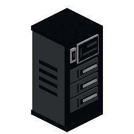
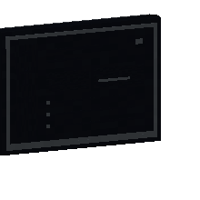
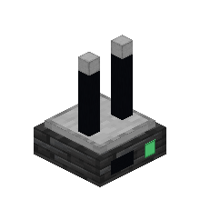

HomeLink Dashboard 1.6.0
A generic visual control center for the HomeLink ecosystem: view HomeCore devices, run their authorized actions, receive their events and organize a personal dashboard. It interprets the public HomeCore schemas and contains no integration specific to any third-party mod.
Blocks#
| Block | Role |
|---|---|
| HomeLink Server | Creates or joins a HomeNetwork. |
| HomeLink Dashboard | A screen showing the linked network's devices, up to 64 blocks from the server. |
| HomeLink Repeater | Extends the radio range by another 64 blocks. |
First steps#
- Placer un HomeLink Server et clic droit.
- Create a HomeNetwork (custom name) or pick an existing network.
- Place a HomeLink Dashboard within 64 blocks and bind it to the same network. Beyond that, place repeaters.
- Use the HOME, DEVICES, ALERTS, NETWORK and SETTINGS tabs; the ? button opens the built-in manual.
Shared interface#
Dashboard shares the frame, palette and controls of HomeLink Storage: 18-pixel controls, tooltips, a ? button in the header, present in both mods.
Crafting#
Icons: 3D render of the blocks, as in the inventory; items (ingots, components…) keep their real texture.



The HomeLink components are assembled at the HomeCore electronics workbench.
Performance#
The verification scenario covers 100 devices and 800 metrics with real synchronization. The current network tracking is capped at 128 devices; the surplus is flagged in the interface.
Install#
Install homecore-1.14.0.jar, homelink_energy-0.5.0.jar and homelink_dashboard-1.6.0.jar into mods, on both client and server.
Gallery#
In-game captures. Click to enlarge.